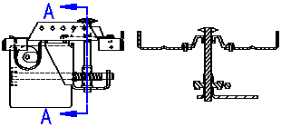
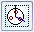
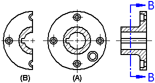

Section View command bar
The Section View command bar is displayed when creating a section view. The Drawing View Selection command bar is available when editing a section view.
For more information on creating section views, see the Section views Help topic.
- Drawing View Style Mapping
-
Specifies that the drawing view will use a predefined style, which is set on the Drawing View Style tab of the Solid Edge Options dialog box.
When the Drawing View Style Mapping button is cleared, you can select and apply individual styles. Choose the style from the Drawing View Style list.
- Drawing View Style
-
Selects a style for the drawing view. This option is not available when Drawing View Style Mapping is enabled.
- Fill Style
-
Selects the active fill style. The available fill styles conform to the commonly used section line standards that represent the material type being sectioned, such as steel, cast iron, and brass.
After the view is created, you can edit the fill pattern and hatching on cut faces using the Fill style, Angle, and Spacing options on the Display tab (Drawing View Properties dialog box).
- Angle
-
Sets the angle for the fill pattern.
For newly created section views, you can specify that the hatch angle is automatically rotated 90 degrees to prevent adjacent parts from having the same fill pattern. You can do this on the Edge Display tab (Solid Edge Options dialog box).
After the view is created, you can edit the fill pattern and hatching on cut faces using the Fill style, Angle, and Spacing options on the Display tab (Drawing View Properties dialog box).
- Spacing
-
Adjusts the spacing of the pattern lines in a fill.
For newly created section views, you can specify that the hatch spacing is automatically adjusted to prevent adjacent parts from having the same fill pattern. You can do this on the Edge Display tab (Solid Edge Options dialog box)
After the view is created, you can edit the fill pattern and hatching on cut faces using the Fill style, Angle, and Spacing options on the Display tab (Drawing View Properties dialog box).
- Section Only
-
Displays only the geometry that physically intersects the cutting plane. The Section Only option is useful when creating section views of complex parts or assemblies; it prevents geometry that lies beyond the cutting plane line from being displayed. Section views placed with the Section Only option also process faster than standard section views.
When you use the Section Only option to create a section view of a part, the edges, faces, and features that lie beyond the cutting plane line are ignored.

When you use the Section Only option to create a section view of an assembly, the edges, faces, features, and parts that lie beyond the cutting plane line are ignored.

This option is available only while you create a section view; it cannot be applied to a previously created section view.

Revolved Section View-
Creates a revolved section view. You must select a cutting plane that consists of two or more lines to create this type of section view.
If the cutting plane is defined by multiple lines that are not orthogonal, or the first and last lines in the cutting plane are not parallel, you must specify whether the first line (A) or last line (B) in the cutting plane will be used to define the fold angle for the section view rotation. The line you select affects the placement angle of the section view.

- Section Full Model
-
Creates a section view of the entire model. This option is available only when you create a section view from an existing section view. When this option is set, the new section view (A) is based on the entire model. When this option is cleared, the new section view is based on the results of the previous section view (B). This option is available only while you create a section view. You cannot apply this option to a previously created section view.

- Model Display Settings
-
Accesses the Drawing View Properties dialog box so you can set the display options for the section view. For example, when working with a section view of an assembly, you can use the Display tab on the Drawing View Properties dialog box to specify which parts are displayed or hidden in the drawing view.
- Shading Options
-
Specifies color or grayscale, shading, and edge visibility for the drawing view.
- Not Shaded
-
Displays color with visible and hidden edges, but no shading.
- Shaded
-
Displays color and shading, but no edges.
- Shaded with Edges
-
Displays color and shading with visible edges.
- Grayscale Shaded
-
Displays grayscale and shading, but no edges.
- Grayscale Shaded with Edges
-
Displays grayscale with visible edges.
How do I
Create a section viewCreate a revolved section view
Create a thin-section view
Change section view type
Scale a section view
Set rib hatching in section views
Show or hide cutting plane lines in section views
Learn more
Section viewsModifying section views
Section view and cutting plane captions
Formatting fill and hatch patterns in section views
Look up more details
Section View command (Draft environment)Override Rib Hatching dialog box